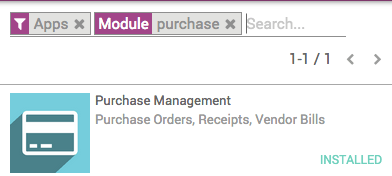

For some Purchase Tenders (PT), you might sometimes want to be able to select only a part of some of the offers you received. In Odoo, this is made possible through the advanced mode of the Purchase module.
Note
If you want to know how to handle a simple Purchase Tender, read the document on How to manage Purchase Tenders.
Configuration
Install the Purchase Management module
From the Apps menu, install the Purchase Management app.
Activating the Purchase Tender and Purchase Tender advanced mode
In order to be able to select elements of an offer, you must activate the advanced mode.
To do so, go into the Purchases module, open the Configuration menu and click on Settings.
In the Calls for Tenders section, tick the option Allow using call for tenders to get quotes from multiple suppliers(...), and in the Advanced Calls for Tenders section, tick the option Advanced call for tender (...) then click on Apply.

Selecting elements of a RFQ/Bid
Go to . Create a purchase tender containing several products, and follow the usual sequence all the way to the Bid Selection status.
When you closed the call, click on Choose Product Lines to access the list of products and the bids received for all of them.

Unroll the list of offers you received for each product, and click on the v symbol (Confirm order) next to the offers you wish to proceed with. The lines for which you've confirmed the order turn blue. When you're finished, click on Generate PO to create a purchase order for each product and supplier.

When you come back to you purchase tender, you can see that the status has switched to PO Created and that the Requests for Quotations now have a status of Purchase Order or Cancelled.

Tip
From there, follow the documentation From purchase order to invoice and receptions to proceed with the delivery and invoicing.